Under Active Development
Rabbithole is an in-progress EverMemOS Hackathon project. Parts of the product are still broken, workflows may change, and the installer is currently aimed at technical early testers.
Neither does it. Rabbithole is an AI learning companion that actually remembers you — what you know, where you struggle, and when you're about to forget.
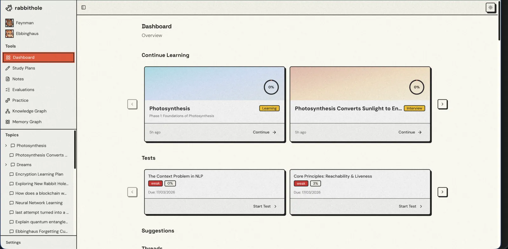
Two AI characters, each inspired by a foundational learning science principle.
Named after Richard Feynman and the Feynman Technique. He believes that if you can't explain something simply, you don't understand it yet. He interviews you, builds personalized study plans, teaches you concept by concept, and then asks you to teach it back.
Named after Hermann Ebbinghaus and the forgetting curve. She tracks every concept you've learned and knows exactly when you're about to forget it. She schedules reviews at scientifically optimal intervals and makes sure nothing falls through the cracks.
Together: learn deeply, then retain permanently.
When you're learning about number theory and hit the phrase "optimization problems" — you don't have to ignore it, abandon your thread, or waste context.
You branch. Right there. Mid-conversation. A new thread opens, focused entirely on that concept. Go as deep as you want. When you're done, jump back to the parent thread, right where you left off.
No more:
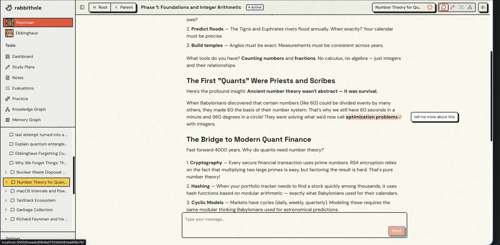
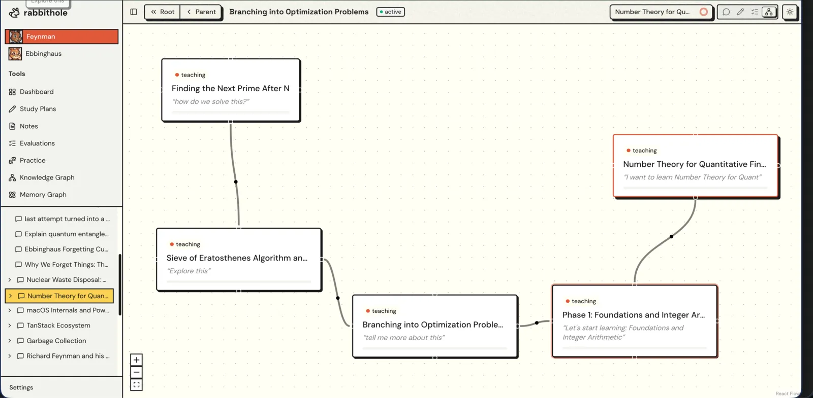
Every branch is a rabbit hole you explored. Jump back to any parent at any time.
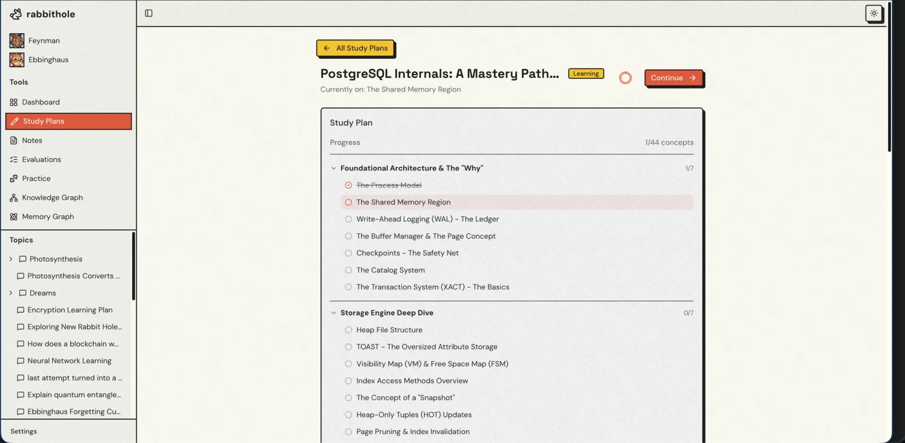
You don't just start chatting. Mr. Feynman conducts an interactive interview first — what do you already know? How deep do you want to go? What's your goal?
Based on your answers, he generates a structured study plan: phases, concepts, dependencies, all laid out. Review it, adjust it, approve it. Then he teaches you through it, one concept at a time.
After each phase of your study plan, Mr. Feynman flips the script. Instead of teaching you, he asks you to teach him.
Write down what you just learned in your own words — in a rich text editor with auto-saving drafts and hints if you're stuck. If you can explain it simply, you understand it. If you can't, you know exactly where your gaps are.
"If you can't explain it simply, you don't understand it well enough." — Richard Feynman
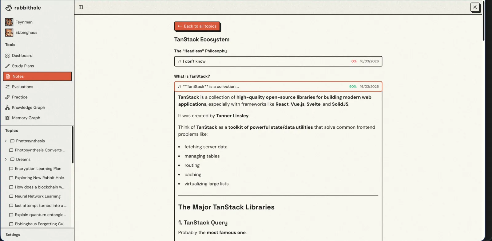
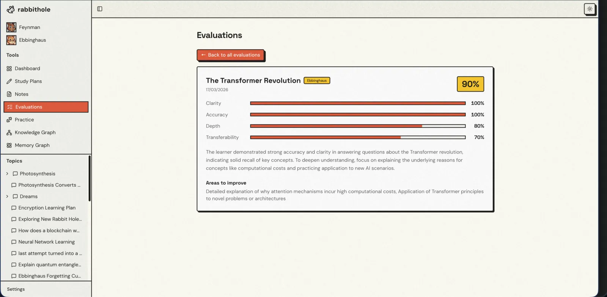
Your Feynman explanations are scored across four dimensions. This isn't binary pass/fail — it pinpoints exactly where your understanding breaks down.
Clarity
Explain simply?
Accuracy
Factually correct?
Depth
How thorough?
Transferability
Apply elsewhere?
Ms. Ebbinghaus tracks every concept and generates targeted practice tests — multiple choice, fill-in-the-blank, and open-ended questions tailored to your mastery level.
Stopped caring about a topic? She notices. And she reminds you. Reviews are scheduled at scientifically optimal intervals — no discipline required.
Review Schedule
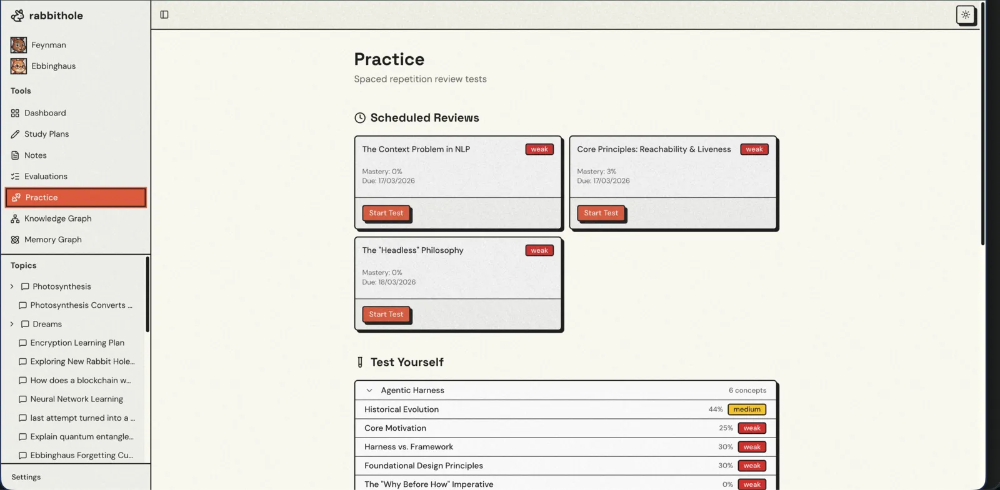
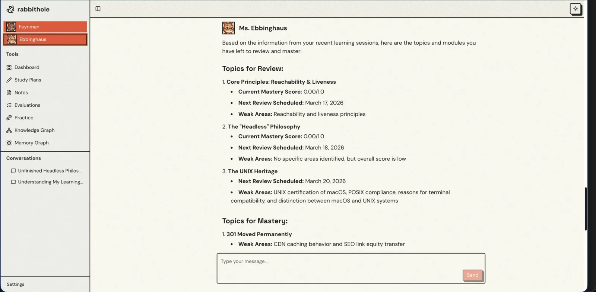
Multiple choice, fill-in-the-blank, and open-ended questions — all generated based on your mastery level. Harder questions for stronger concepts. More fundamentals for weaker ones.
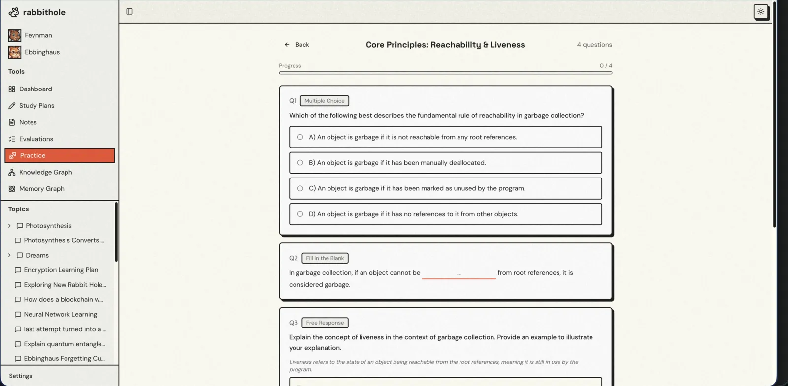
Rabbithole doesn't start from zero. Ever. Built on EverMemOS, the system maintains a constantly evolving learner profile — your preferences, strengths, struggles, and facts about how you learn best.
Every conversation extracts memories. Every session refines the model. Mr. Feynman remembers that you're a visual learner who struggles with abstract math but thrives with concrete examples. He adapts. Across sessions. Across weeks. Across months.
This is what makes Rabbithole fundamentally different from ChatGPT: your knowledge compounds.
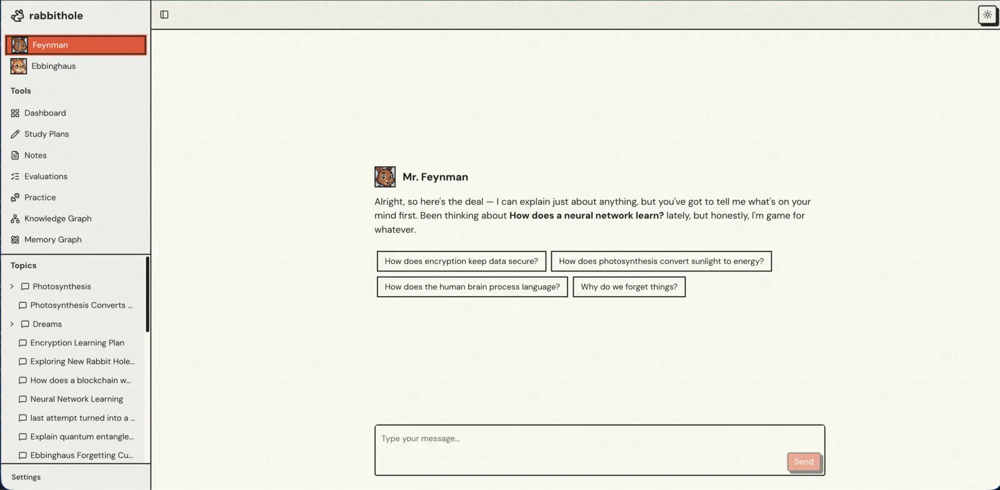
Every concept you've learned, every connection between them, every mastery score — visualized as an interactive graph. Topics are clusters. Concepts are nodes colored by mastery tier. Click any concept to see details.
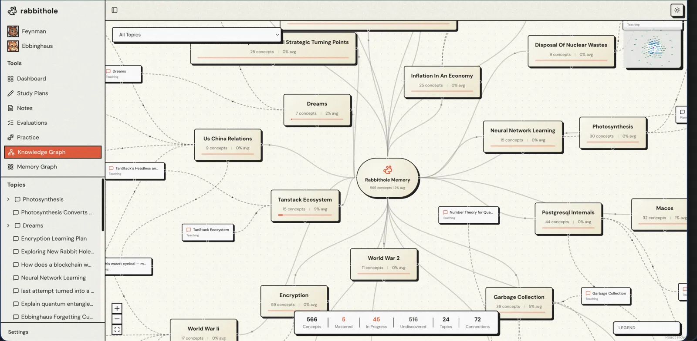
A separate graph powered by EverMemOS showing the memories extracted about you as a learner — your profile, facts, learning events, and how they connect. This is the cognitive model, made visible.
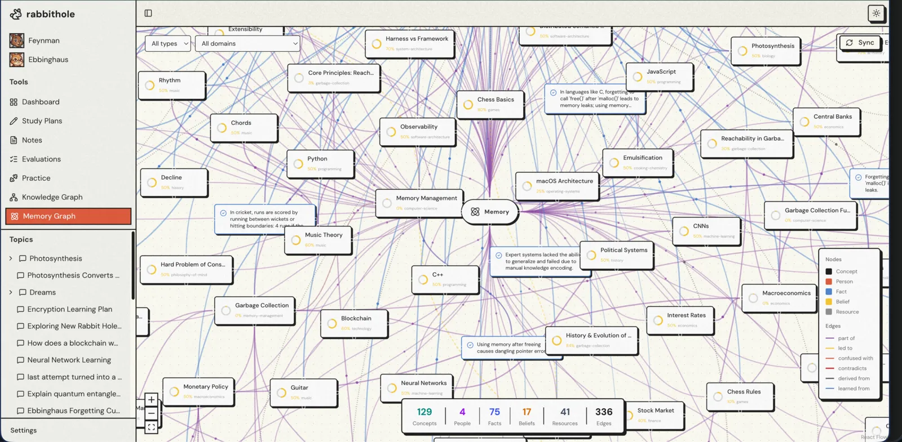
Rabbithole runs locally on your machine, with your frontend and backend hosted on localhost. The current install still requires cloud credentials for OpenRouter, EverMemOS, and MongoDB Atlas during setup.
One-command install
Prerequisites
uv and pnpmWhat setup does
rabbithole launcherFrom "I want to learn X" to lasting understanding in 10 steps.
Mr. Feynman interviews you
What do you already know? How deep do you want to go?
Generates a structured study plan
Phases, concepts, dependencies — tailored to your level.
You approve (or adjust) the plan
Full control over what you learn and in what order.
Teaches you concept by concept
Conversationally, not walls of text. Checks your understanding along the way.
Hit a confusing term? Branch.
Dive into a rabbit hole. Go deep. Come back where you left off.
Feynman Mode: explain what you learned
After each phase, write it down in your own words.
Scored on 4 dimensions
Clarity, accuracy, depth, transferability — with specific feedback.
Weak concepts scheduled for review
Spaced repetition kicks in automatically. No discipline required.
Ms. Ebbinghaus reminds you
"You learned X 3 days ago. Quick review?" She shows up at the right time.
Your knowledge compounds
Gaps get filled. Nothing is forgotten. Learning that actually sticks.
Next.js Frontend ───SSE/REST───► FastAPI Backend ───HTTP───► EverMemOS Cloud
(Chat + Trees) (Agent Loop) (Long-term Memory)
│
├── Mr. Feynman (teaching agent)
├── Ms. Ebbinghaus (review agent)
├── MongoDB Atlas (app data)
└── OpenRouter (LLM provider)Frontend
Next.js, TypeScript, Tailwind
Backend
FastAPI, OpenAI Agents SDK
Database
MongoDB Atlas
Memory
EverMemOS Cloud
LLM
OpenRouter
Graphs
React Flow, D3